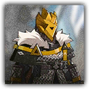

梦魇效仿者 Nightmare Mimic
近战 法术；精英 类人（梦魇；库兰塔）

|
 |
梦魇效仿者。因逐魇骑士的战斗以及"行为艺术"而开始追随他的效仿者。只得其形不得其意，也算某种另类的粉丝吧。 |
"可汗的火焰……照我说的，烧起来！"
梦魇效仿者丨Nightmare Mimic
中型类人（梦魇；库兰塔），混乱中立
| AC 15（镶钉皮甲） | 先攻 +5（15） |
| HP 90（12d8+36） | |
| 速度 35 尺 | |
| 调整 | 豁免 | 调整 | 豁免 | 调整 | 豁免 | |||||||||
|---|---|---|---|---|---|---|---|---|---|---|---|---|---|---|
| 力量 | 17 | +3 | +6 | 敏捷 | 16 | +3 | +3 | 体质 | 16 | +3 | +3 | |||
| 智力 | 10 | +0 | +0 | 感知 | 12 | +1 | +4 | 魅力 | 15 | +2 | +5 |
| 技能 运动+6，威吓+5，察觉+4 |
| 抗性 心灵 |
| 感官 黑暗视觉60尺，被动察觉14 |
| 语言 通用语，卡西米尔语 |
| CR 5（XP 1,800；PB+3） |
动作 Actions
多重攻击 Multiattack。梦魇效仿者发动两次长柄刀攻击，其可以将其中一次攻击替换为恐吓。
长柄刀 Glaive。近战攻击检定：+6（对恐慌的目标有优势），触及10尺。命中：13（2d6+3）挥砍伤害，外加7（2d6）心灵伤害，若目标恐慌则提升至11（2d10）心灵伤害。
恐吓 Intimidate。感知豁免检定：DC 13，梦魇效仿者30尺内一个可以看见或听见其的生物。失败：目标陷入恐慌状态直到效仿者的下回合开始。
梦魇追随者 Nightmare Follower
近战 法术；精英 类人（梦魇；库兰塔）
|
梦魇追随者。因逐魇骑士的战斗以及"行为艺术"而开始追随他的追随者。从古老的典籍和史书中猜测着梦魇的真实身份，但梦魇本人仍旧认为这是对古老仪式的亵渎。 |
"我们都是可汗的子孙——尽管他从不承认我们。"
梦魇追随者丨Nightmare Follower
中型类人（库兰塔），混乱中立
| AC 16（链甲衫） | 先攻 +6（16） |
| HP 135（18d8+54） | |
| 速度 35 尺 | |
| 调整 | 豁免 | 调整 | 豁免 | 调整 | 豁免 | |||||||||
|---|---|---|---|---|---|---|---|---|---|---|---|---|---|---|
| 力量 | 18 | +4 | +7 | 敏捷 | 16 | +3 | +3 | 体质 | 16 | +3 | +6 | |||
| 智力 | 12 | +1 | +1 | 感知 | 14 | +2 | +5 | 魅力 | 18 | +4 | +7 |
| 技能 运动+7，威吓+7，察觉+5，奥秘+4 |
| 抗性 心灵 |
| 感官 黑暗视觉60尺，被动察觉15 |
| 语言 通用语，卡西米尔语 |
| CR 8（XP 3,900；PB+3） |
特质 Traits
怯薛余威 Kheshig Echo。梦魇追随者对抗恐慌状态的豁免具有优势。
动作 Actions
多重攻击 Multiattack。梦魇追随者发动两次长柄刀攻击。她可以将其中一次攻击替换为使用施法施展一道不高于二环的法术，或者在已完成充能时替换为恐惧侵袭。
长柄刀 Glaive。近战攻击检定：+8，触及10尺。命中：16（2d10+5）挥砍伤害，外加7（2d6）心灵伤害，若目标处于恐慌状态，心灵伤害提升至11（2d10）。
恐惧侵袭 Fear Assault（充能5~6）。梦魇效仿者使用魔法在目标身上塑造恐惧。魅力豁免检定：DC15，追随者60尺内一个她可见的生物。失败：目标受到10（3d6）心灵伤害外加10（3d6）暗蚀伤害，并陷入恐慌状态直到追随者下回合开始。成功：仅半伤。
施法 Artcasting。梦魇追随者作为5级施法者施展一道以下法术，使用魅力作为施法属性（法术豁免 DC 15，法术攻击命中+7）。
随意：亡者丧钟，次级幻象，奇术，颤栗之触
每项3/日：造成恐惧XGE，命令术
每项1/日：魅影之力，恐惧术
附赠动作 Bonus Actions
追猎冲锋 Hunting Charge。梦魇追随者向一名其可见的敌人直线移动至多等于其速度一半的距离。若目标处于恐慌状态，追随者可以在移动结束后立即对其发动一次长柄刀攻击。
反应 Reactions
梦魇格挡 Nightmare Parry。触发：追随者被一次攻击命中。响应：追随者的AC获得+3加值，可能使其失手。若攻击因此失手，且攻击者位于追随者的触及范围内，追随者可以对该攻击者发动一次长柄刀攻击。